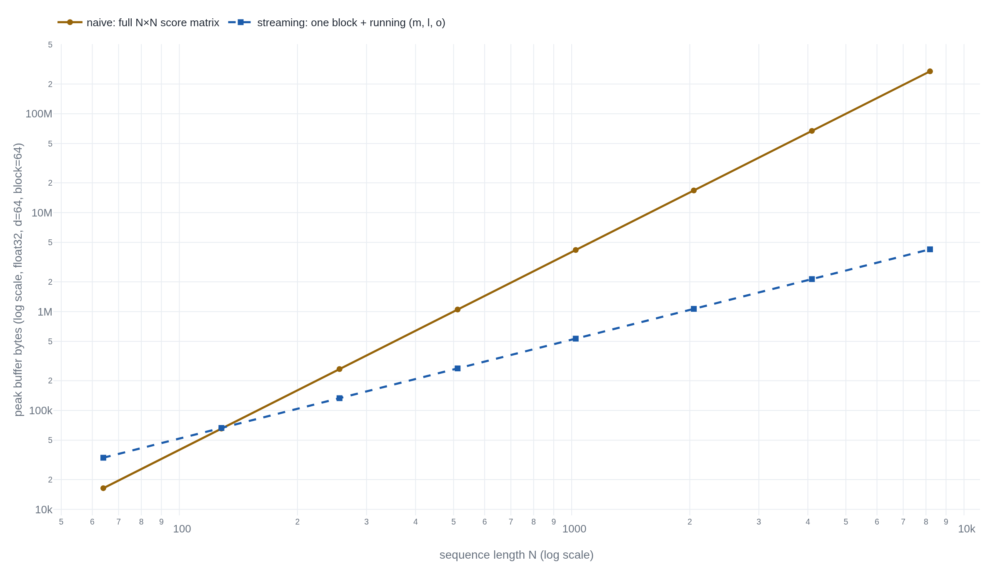

A running max and a running sum replace attention's score matrix
A from-scratch NumPy version of FlashAttention's online-softmax core reproduces exact attention to float32 precision, without ever holding the full score matrix that costs the naive version 256 mebibytes by sequence length 8192.
Exact attention does not need its own score matrix to exist
Attention over a sequence of length N ordinarily computes a score matrix with one entry for every query paired with every key: N² numbers, held in memory before a single softmax weight comes out.12 FlashAttention's actual contribution is not the softmax itself. It is a GPU kernel that never writes that matrix to the GPU's slow memory (HBM) at all. Instead it fuses the score, the softmax, and the weighted sum of values into tiles that stay in fast on-chip memory (SRAM) for as long as a tile is needed.34
Underneath that kernel sits a smaller idea that has nothing to do
with GPUs: a running maximum and a running sum, updated one block of
keys at a time, that produce exactly the same output the full
matrix would. This piece builds that idea on its own, in NumPy, with
no kernel and no GPU. It checks the result against the textbook
computation until the two agree to the limits of the arithmetic
doing the checking. The naive version below builds the N² matrix
directly: every score, then the softmax of the whole row, then the
multiply by V. The streaming version tiles the keys and values into
blocks instead, and keeps three running numbers per query: a
maximum m, a normalizing sum l, and an
output accumulator o. Every time a new block raises the
running max, the accumulator already built from earlier blocks gets
rescaled before the new block folds in. That single correction is
what makes the streaming output exact.
Every query scored against every key, held at once
The textbook computation for one attention head is three steps. Scores: S = QKᵀ, an N-by-N matrix, one row per query and one column per key. Weights: softmax each row of S. Output: multiply the weight matrix by V. Implemented directly, S has to exist in memory in full before the softmax can touch a single row of it. That is exactly the baseline FlashAttention's own paper states as Algorithm 0: compute S and write it out, read it back to compute the softmax P, write P out, then read P and V to compute the output.3 That description counts what a GPU kernel reads and writes to its slow memory, not what a Python array occupies in RAM. The two are related, not identical: the naive implementation below is memory-footprint-quadratic in ordinary RAM, the everyday consequence of the same three-step shape, not a restatement of the paper's own HBM-traffic claim.
Exponentiating S directly is not safe. On real hardware, an exponent
that is only moderately large overflows the range a float can hold.
A numerically sound softmax first subtracts each row's own maximum
before exponentiating: exp(s - max(s)) never exceeds 1,
however large s gets, and the subtracted max cancels out once the
ratio is taken.5
Milakov and Gimelshein motivate exactly this fix,
three passes over the row in their original form: one to find the
max, one to sum the shifted exponentials, one to divide.6
naive_attention below folds the second and third passes
together, but it still needs the whole row, and the whole matrix,
before it can start:
def naive_attention(Q, K, V):
"""S = QK^T in full, safe softmax, then S @ V.
Returns (O, peak_bytes), where peak_bytes is the score
matrix's own size."""
S = Q @ K.T # (N, N): the whole matrix, at once
peak_bytes = S.nbytes
m = S.max(axis=1, keepdims=True)
P = np.exp(S - m)
O = (P / P.sum(axis=1, keepdims=True)) @ V
return O, peak_bytesOne running max and one running sum carry the whole row
Before tiling anything, it helps to see the recurrence at its
smallest: one number folded into a running softmax at a time, no
blocks, no matrices, no keys or queries yet. For a stream of numbers
x₁, x₂, …, x_V, keep two running values: m, the largest
x seen so far, and d, a running denominator built from
every x seen so far, each term expressed relative to the current m.
They are just two numbers, updated
together, one element at a time, and this pair is what
Milakov and Gimelshein call the online normalizer.6
- m_jthe running max after folding in this element: the largest score seen so far.
- m_{j-1}the running max carried in from every element before this one.
- x_jthe new element being folded in.
- e^{m_{j-1}-m_j}the rescale factor on everything already accumulated under the old max: exactly 1 when the max didn't move, and less than 1 when it did.
- e^{x_j-m_j}this element's own contribution, computed under the same, current max as every earlier term.
d ends up holding exactly what a two-pass safe softmax would compute: the sum of the shifted exponentials, under the max over the whole vector. Milakov and Gimelshein prove this by induction directly from the update rule above. After folding in the last element, m equals the max over every element seen, and d equals the safe-softmax denominator. Both arrive without a first pass over the data to find that max: the max is discovered incrementally, and the rescale term repairs whatever was already accumulated under a stale one.6
The same recurrence, one block of keys at a time
Tiling the recurrence over blocks changes what x_j means without
changing what the recurrence does with it. Instead of one scalar
arriving at a time, a whole block of keys arrives: its own local
scores, its own local max. The merge step is the identical
maximum-and-rescale operation the scalar recurrence used, except
every accumulator now also carries an output vector
o, rescaled by the same factor whenever a block raises
the max, so it stays aligned with the same denominator
l as it grows. FlashAttention's Algorithm 1 states this
block update directly, and its Theorem 1 proves the result equals
softmax(QKᵀ)V exactly.3
def streaming_attention(Q, K, V, block_size):
"""Tiles K, V into blocks. Per query: running max m,
running denominator l, running output accumulator o.
Never materializes the full N x N score matrix.
Returns (O, peak_bytes): peak_bytes is the largest total
footprint of one block's score buffer plus (m, l, o)."""
N, d = Q.shape
Nk = K.shape[0]
dtype = Q.dtype
m = np.full((N, 1), -np.inf, dtype=dtype)
l = np.zeros((N, 1), dtype=dtype)
o = np.zeros((N, d), dtype=dtype)
peak_bytes = 0
for start in range(0, Nk, block_size):
end = min(start + block_size, Nk)
Kb, Vb = K[start:end], V[start:end]
Sb = Q @ Kb.T # (N, block_size): one block only
peak_bytes = max(peak_bytes, Sb.nbytes + m.nbytes + l.nbytes + o.nbytes)
m_new = np.maximum(m, Sb.max(axis=1, keepdims=True))
Pb = np.exp(Sb - m_new)
l = l * np.exp(m - m_new) + Pb.sum(axis=1, keepdims=True)
o = o * np.exp(m - m_new) + Pb @ Vb
m = m_new
return o / l, peak_bytesTrace it on one query against six keys, tiled two at a time, so every number below is checkable against the code above. The six raw scores come out to −1.5058, −0.6387, −0.8939, 1.5231, 0.0306, and 1.1040.
Block 0 folds in the first two scores, −1.5058 and −0.6387. Their local max, −0.6387, is higher than m's starting value of −∞, so m becomes −0.6387. l starts at 0 and becomes 1.4202, the shifted-exp sum of both terms under that new max.
Block 1 folds in −0.8939 and 1.5231. The block's own max, 1.5231, is higher than the running m of −0.6387, so m jumps to 1.5231. Everything accumulated under the old max now needs correcting: the rescale factor is e^(−0.6387−1.5231) ≈ 0.1151, applied to l before block 1's own two terms are added. l goes from 1.4202 to 1.2527, smaller than it was even after two more terms were folded in. Most of block 0's contribution just got shrunk to match the new, larger max. The output accumulator o gets the identical 0.1151 rescale on every one of its four coordinates, before block 1's weighted values are added in.
Block 2 folds in the last two scores, 0.0306 and 1.1040, neither above the running max of 1.5231. This time the rescale factor is e^(1.5231−1.5231) = 1: nothing shrinks, and l simply grows to 2.1351.
Dividing the final o by the final l reproduces
[−0.0576, 0.4765, −0.2532, −0.3786], the same four numbers
naive_attention returns for the same query, to four
decimal places. The one moment that matters in this whole trace is
block 1's rescale. A later block raising the max forces every
earlier block's partial contribution to shrink by the same factor.
That is the entire reason a streaming implementation can start
before it has seen the last key and still land on the exact answer.
Two implementations, one output, to the precision each dtype allows
Both functions above return an output array; the question is whether they return the same one. Running both across five sizes, from four keys up to 1024, float64, block size 32, and comparing element-by-element:
>>> for N in (4, 16, 64, 256, 1024):
... Q = rng.standard_normal((N, 64))
... K = rng.standard_normal((N, 64))
... V = rng.standard_normal((N, 64))
... O_naive, _ = naive_attention(Q, K, V)
... O_stream, _ = streaming_attention(Q, K, V, block_size=32)
... print(N, np.max(np.abs(O_naive - O_stream)))
...
4 4.440892098500626e-16
16 8.881784197001252e-16
64 3.1086244689504383e-15
256 5.329070518200751e-15
1024 6.217248937900877e-15
None of these differences is exactly zero, and none should be.
Milakov and Gimelshein's Theorem 1 and FlashAttention's Theorem 1
both prove the recurrence returns the same value as the two-pass
computation as a statement about real numbers.63
Floating-point addition is not associative: summing the same terms
in a different order, which tiling necessarily does, can move the
last few bits of the result. What Fig. 3 shows is that this
movement stays within rounding error, not that the two
implementations compute bit-identical arrays. That is what "exact"
means in this literature: agreement to the precision the arithmetic
itself allows, which is why the equality check in the code above is
np.allclose with a tolerance, never
==.
The 256 mebibytes the streaming version never allocates
Both functions above also return a second number: the size, in bytes, of the largest buffer each one built along the way. For the naive version that is simply S itself, N² entries. For the streaming version it is the largest single moment in the loop: one block's local score buffer, N rows by block_size columns, plus the three running accumulators m, l, and o. None of the three grow with the number of blocks already processed.
| N | naive score matrix | streaming peak buffer | ratio |
|---|---|---|---|
| 64 | 16 384 B | 33 280 B | 0.5× |
| 256 | 262 144 B | 133 120 B | 2.0× |
| 1024 | 4 194 304 B | 532 480 B | 7.9× |
| 4096 | 67 108 864 B | 2 129 920 B | 31.5× |
| 8192 | 268 435 456 B | 4 259 840 B | 63.0× |
Below N≈130 the streaming buffer is actually the larger of the two: at N=64 the three running accumulators cost more than the entire 16 KiB score matrix they are meant to avoid. The saving is asymptotic.

FlashAttention's own Theorem 1 states this asymptotic shape abstractly: O(N) additional memory beyond the inputs and output themselves. Like the code here, that bound never reaches for the full N² matrix at any point in the computation.3 It is not the same measurement as the bytes above, though. Theorem 1's "additional" explicitly excludes the O(Nd) already spent on Q, K, V, and O. Rabe and Staats' own O(1) and O(log n) figures, for the same idea applied one query at a time, exclude something different: the cost of writing each query's output at all. Their actual TPU implementation has to pay that cost, and lands at a measured O(√n) once it does.7 Neither paper's asymptotic figure is the byte count a working NumPy array reports above. Citing one as a stand-in for the other would overstate what either establishes.
A score of 113 breaks the softmax that skips the max
Every implementation above subtracts a max before exponentiating,
whether it discovers that max in one pass over the full row or
incrementally over blocks. Skipping that step fails outright once a
score gets large enough, and large enough is closer than it looks:
Rabe and Staats measured the exact edge, a score of 89 or higher
overflows exp() to infinity outright in float32.7
>>> Q = rng.standard_normal((8, 16)).astype(np.float32) * 4.2
>>> K = rng.standard_normal((8, 16)).astype(np.float32) * 4.2
>>> V = rng.standard_normal((8, 16)).astype(np.float32)
>>> S = Q @ K.T
>>> S.min(), S.max(), (S >= 89).sum()
(-176.2, 113.0, 3)
>>> O_unsafe = naive_unsafe_attention(Q, K, V) # no max subtraction
>>> np.isnan(O_unsafe).any(axis=1).sum() # rows gone to NaN
3
>>> O_safe, _ = naive_attention(Q, K, V)
>>> O_stream, _ = streaming_attention(Q, K, V, block_size=4)
>>> np.isnan(O_safe).any(), np.isnan(O_stream).any()
(False, False)
>>> np.max(np.abs(O_safe - O_stream))
2.384e-07Three of the sixty-four scores in this batch cross that line. The naive-but-unshifted softmax fails on exactly the queries that produced them: three of the eight output rows come back as NaN, propagated from a division by an infinite denominator. The safe naive version and the streaming version both stay finite, because both compute a max before they exponentiate anything. The streaming version's advantage is that it never needs to see the whole row to know that max. It discovers and corrects for the max as blocks arrive, rather than in a separate first pass. Their outputs still agree, this time to about 2×10⁻⁷, in line with float32's own rounding unit rather than float64's.
None of this is a claim about speed. FlashAttention's own measured numbers are wall-clock: 15 percent faster end-to-end training on BERT-large against the MLPerf 1.1 record, roughly 3× on GPT-2, 2.4× on the long-range arena benchmark.3 Those numbers come from a fused CUDA kernel that moves Q, K, and V into SRAM once per tile and never writes the score matrix out to HBM at all.84 They also come from a backward pass that recomputes the attention matrix from the saved (m, l) statistics instead of storing it.3 FlashAttention-2, released a year later, does not touch this math at all. It changes how work is partitioned across GPU thread blocks and warps, closing v1's gap to matmul efficiency from 25–40 percent of theoretical peak FLOPs/s up to 50–73 percent.9 A NumPy array in this piece's own process lives in one flat pool of RAM, with no SRAM/HBM hierarchy for any kernel to be careful about. Nothing above can produce a wall-clock number that means what either paper's numbers mean.
The naive and streaming implementations here return the same output, to float32's own rounding unit, from a buffer that stops doubling every time N doubles. That agreement is what the recurrence promises, and the closest thing to FlashAttention's exactness theorem this piece can produce without a GPU. The 15 percent, the 3×, and the 2.4× belong to the kernel. A NumPy loop cannot produce them.
Sources
- arXiv · Vaswani, Shazeer, Parmar, Uszkoreit, Jones, Gomez, Kaiser, Polosukhin, "Attention Is All You Need"
- PyTorch docs · torch.nn.functional.scaled_dot_product_attention
- arXiv · Dao, Fu, Ermon, Rudra, Ré, "FlashAttention: Fast and Memory-Efficient Exact Attention with IO-Awareness"
- arXiv · Jia, Maggioni, Staiger, Scarpazza, "Dissecting the NVIDIA Volta GPU Architecture via Microbenchmarking"
- Deep Learning · Goodfellow, Bengio, Courville, "Numerical Computation" (Chapter 4)
- arXiv · Milakov, Gimelshein, "Online normalizer calculation for softmax"
- arXiv · Rabe, Staats, "Self-attention Does Not Need O(n²) Memory"
- GitHub · Dao-AILab, "flash-attention"
- arXiv · Dao, "FlashAttention-2: Faster Attention with Better Parallelism and Work Partitioning"